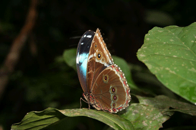
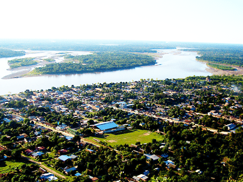
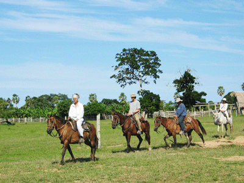
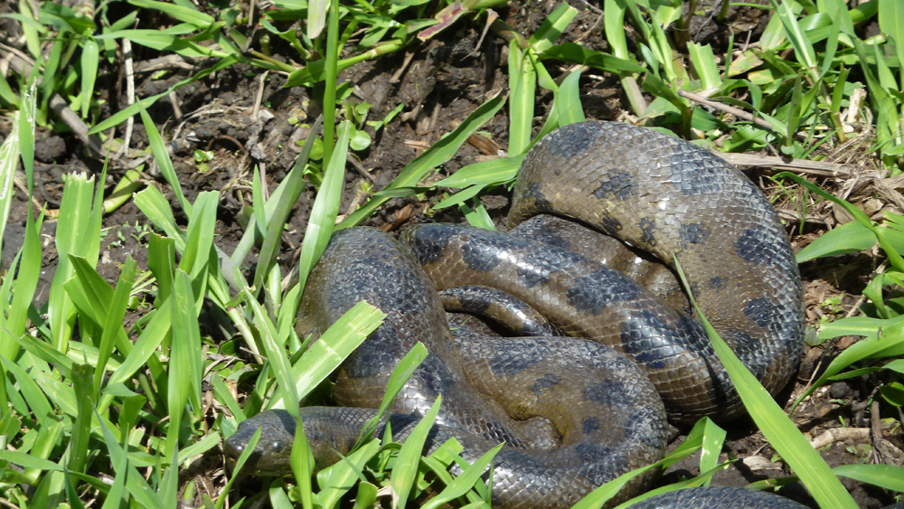
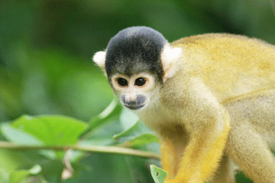

Welcome to the Amazonian Region of Bolivia
Where the rainforest and the pampas form one of the most amazing landscapes ever seen
Where the rainforest and the pampas form one of the most amazing landscapes ever seen
Experience the incredible biodiversity of Madidi National Park and the Biosphere Reserve Pilon Lajas, two of Bolivia's most important protected areas surrounded by vibrant communities in the North-West region.

Explore one of the world's most biodiverse regions

Rafting, kayaking, and expedition trips
Comfortable cabañas with soft beds for relaxation
Glimpses of the amazing adventures that await you






Choose from our carefully crafted adventure experiences with detailed day-by-day itineraries

Discover the incredible biodiversity of Madidi National Park with guided trekking and wildlife observation in pristine rainforest.
Experience the Biosphere Reserve Pilon Lajas with indigenous culture, thrilling rafting, and pristine nature exploration.

Enjoy wildlife observation, swimming with pink dolphins, and horseback riding in the warm waters and grasslands of the Yacuma River region.
Comfortable cabins with soft beds and private facilities, camping in pristine natural settings
All meals included with buffet breakfast, packed lunches for treks, and traditional dinners
Experienced local guides with deep knowledge of flora, fauna, and indigenous cultures
4x4 vehicles, motorboats, and traditional canoes for comprehensive exploration
Ready to start your Amazon adventure?